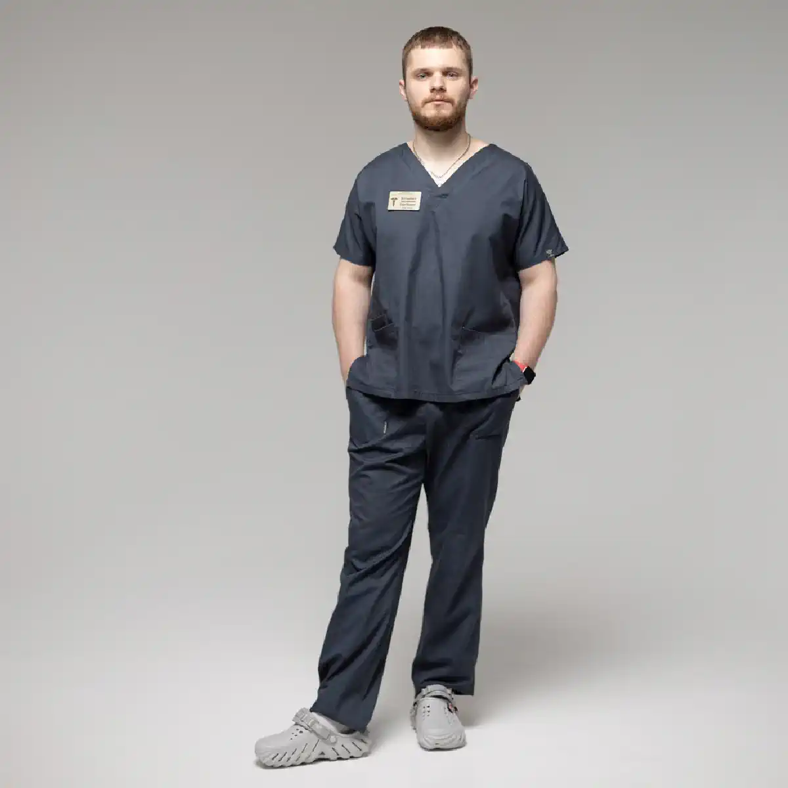

+38(068) 79 72 782
+38(068) 79 72 782Подшивка от наркотиков Киев
Шаг к жизни без зависимости


Бесплатная консультация, работаем круглосуточно 24/7
Шаг к жизни без зависимости

Наркотическая зависимость — это тяжёлое хроническое заболевание, которое требует профессиональной медицинской помощи и комплексного подхода к лечению. Одним из методов, применяемых в наркологии для борьбы с зависимостью, является подшивка от наркотиков. Эта процедура направлена на формирование устойчивого барьера, который помогает человеку воздерживаться от употребления психоактивных веществ. В Киеве процедура подшивки проводится в наркологической службе UmbrellaPlus под наблюдением врача-нарколога. Метод используется как часть комплексной терапии и помогает снизить риск срывов на начальном этапе отказа от наркотиков.
Наркотическая зависимость формируется постепенно и связана с изменениями в работе центральной нервной системы. При регулярном употреблении психоактивных веществ нарушается естественная регуляция нейромедиаторов, формируется патологическая тяга, а организм начинает требовать всё новые дозы вещества. Со временем зависимость влияет не только на физическое состояние человека, но и на его психику, социальную жизнь и способность принимать взвешенные решения.
Подшивка от наркотиков применяется как один из методов, который помогает создать дополнительную защиту от повторного употребления. После проведения процедуры в организме пациента начинает действовать специальный препарат пролонгированного действия. Его задача — либо блокировать эффект наркотического вещества, либо формировать выраженную негативную реакцию при попытке употребления. Благодаря этому у человека появляется дополнительная мотивация воздерживаться от наркотиков.
Подшивка не является единственным способом лечения наркотической зависимости. Она рассматривается как часть комплексной программы терапии, которая может включать детоксикацию организма, медикаментозную поддержку, психотерапию и длительную реабилитацию. Такой подход позволяет воздействовать не только на физическую зависимость, но и на психологические причины употребления наркотиков. Медицинская помощь при наркотической зависимости начинается с консультации врача-нарколога. Специалист оценивает состояние пациента, длительность употребления психоактивных веществ, наличие осложнений со стороны внутренних органов и нервной системы. На основе этой информации подбирается оптимальная тактика лечения.
Подшивка от наркотической зависимости — это медицинская процедура, при которой в организм пациента вводится специальный препарат длительного действия. Чаще всего он имплантируется под кожу в виде капсулы или вводится с помощью инъекции. Основная цель процедуры — создать фармакологический барьер, который препятствует употреблению наркотических веществ. В зависимости от типа препарата он может блокировать действие наркотика или вызывать выраженную негативную реакцию организма при его употреблении.
Метод подшивки используется как дополнительная мера в лечении зависимости и помогает пациенту удержаться от употребления наркотиков в период восстановления. Подшивка применяется после предварительной оценки состояния пациента врачом-наркологом. Перед проведением процедуры специалист учитывает тип употребляемых наркотических веществ, длительность зависимости, состояние внутренних органов и возможные противопоказания. Такой подход позволяет подобрать наиболее безопасный и эффективный вариант лечения.
Сама процедура не устраняет психологическую причину зависимости. Наркотическая тяга формируется на уровне поведения, привычек и эмоциональных реакций. Поэтому подшивка рассматривается как часть комплексной терапии, которая помогает пациенту выиграть время для восстановления и работы с психологическими аспектами зависимости. После введения препарата человек получает своеобразный «защитный период», когда риск повторного употребления значительно снижается. В этот период особенно важно уделить внимание психотерапии, социальной поддержке и формированию новых здоровых привычек. Именно сочетание медицинских методов лечения и психологической помощи позволяет добиться более устойчивого результата и снизить вероятность рецидива.
Механизм действия подшивки зависит от используемого препарата. В большинстве случаев применяются лекарственные средства, которые блокируют опиоидные рецепторы или изменяют реакцию организма на наркотические вещества. Если человек пытается употребить наркотик после процедуры, препарат может блокировать ожидаемый эффект эйфории. В результате употребление вещества не приносит желаемого результата, что постепенно снижает психологическую тягу.
Такая фармакологическая защита помогает пациенту сосредоточиться на восстановлении здоровья и прохождении дальнейших этапов лечения. Важно отметить, что действие препаратов пролонгированного типа сохраняется в организме длительное время. Активное вещество постепенно высвобождается и поддерживает необходимую концентрацию, благодаря чему сохраняется стабильный терапевтический эффект. Это позволяет сформировать период относительной стабильности, когда пациент может сосредоточиться на лечении и изменении образа жизни.
Дополнительным эффектом является формирование психологического барьера. Осознание того, что употребление наркотиков не принесёт ожидаемого эффекта или может вызвать неприятную реакцию организма, снижает вероятность повторного употребления. Это помогает пациенту удерживаться от наркотиков в наиболее сложный период — на начальном этапе отказа от психоактивных веществ. Подобный механизм особенно важен в первые месяцы после прекращения употребления наркотиков, когда риск рецидива остаётся высоким. Подшивка создаёт дополнительную защиту и помогает человеку постепенно адаптироваться к жизни без наркотических веществ, проходя дальнейшие этапы лечения и реабилитации.
Для подшивки от наркотической зависимости применяются препараты пролонгированного действия. Они постепенно высвобождаются в организме и обеспечивают длительный терапевтический эффект. Чаще всего используются средства, которые блокируют действие опиоидных наркотиков. Подбор препарата проводится врачом индивидуально после консультации и оценки состояния пациента.
При выборе препарата учитываются особенности зависимости, общее состояние здоровья человека и возможные противопоказания. Одним из наиболее известных препаратов, применяемых в наркологии, является налтрексон. Это лекарственное средство относится к группе антагонистов опиоидных рецепторов и используется для блокирования действия опиоидных наркотиков. После введения препарата рецепторы, через которые наркотические вещества вызывают эффект эйфории, становятся недоступными для их воздействия.
В результате даже при попытке употребления опиоидных наркотиков человек не ощущает привычного эффекта. Отсутствие ожидаемой реакции постепенно снижает психологическую тягу к веществу и помогает пациенту удерживаться от повторного употребления. Налтрексон может применяться в различных формах, включая пролонгированные препараты, которые вводятся в организм на длительный период. Такие методы позволяют обеспечить стабильную защиту и снизить риск срывов на этапе восстановления. Важно, чтобы применение препарата происходило под контролем врача-нарколога. Специалист оценивает состояние пациента, учитывает тип зависимости и подбирает наиболее подходящую схему лечения, чтобы терапия была безопасной и максимально эффективной.
Процедура подшивки проводится в медицинском учреждении и занимает относительно короткое время. Перед её проведением врач-нарколог проводит консультацию и осмотр пациента. Сама процедура выполняется в стерильных условиях. В зависимости от метода лечения препарат может вводиться в виде инъекции или имплантироваться под кожу через небольшой разрез. После введения препарата место вмешательства обрабатывается и закрывается стерильной повязкой.
Пациент после процедуры некоторое время находится под наблюдением медицинского персонала. Перед проведением подшивки также важно убедиться, что пациент не находится в состоянии наркотического опьянения. В некоторых случаях перед процедурой может потребоваться детоксикация организма, которая помогает вывести остатки психоактивных веществ и стабилизировать состояние человека. Это повышает безопасность процедуры и эффективность дальнейшего лечения.
Сама процедура обычно проводится под местной анестезией, поэтому пациент не испытывает выраженного болевого дискомфорта. Врач выполняет небольшой разрез кожи, через который вводится препарат или специальная капсула пролонгированного действия. После этого рана аккуратно ушивается и накладывается стерильная повязка. После завершения процедуры пациенту дают рекомендации по уходу за местом вмешательства и соблюдению режима в первые дни. Как правило, восстановление проходит быстро, а сама процедура не требует длительной госпитализации. В большинстве случаев человек может вернуться к привычному образу жизни уже в течение короткого времени, продолжая дальнейшее лечение и реабилитацию под наблюдением специалистов.
Стоимость подшивки от наркотиков в Киеве начинается от 15000 грн.
| Популярные услуги | Цена |
|---|---|
| Консультация нарколога | От 1500 грн |
| Лечение наркомании | От 3000 грн |
| Капельница от наркотиков | От 3000 грн |
| Вывод из запоя на дому | От 2499 грн |
Продолжительность действия подшивки зависит от типа препарата и его дозировки. Некоторые лекарственные средства могут действовать до 5 лет, обеспечивая длительную защиту от употребления наркотиков. На длительность эффекта также влияют индивидуальные особенности организма пациента, состояние обмена веществ и общее состояние здоровья.
По окончании действия препарата при необходимости может быть проведена повторная процедура. В современной наркологии применяются препараты пролонгированного действия, которые постепенно высвобождаются в организме и поддерживают стабильную концентрацию действующего вещества. Благодаря этому обеспечивается продолжительный терапевтический эффект и формируется фармакологический барьер, препятствующий употреблению наркотических веществ.
Срок действия подшивки может варьироваться в зависимости от выбранного метода лечения. Некоторые препараты рассчитаны на несколько месяцев, в то время как другие могут обеспечивать защиту на более длительный период. Решение о сроке действия и необходимости повторной процедуры принимает врач-нарколог после оценки состояния пациента и динамики лечения. Важно использовать период действия подшивки максимально эффективно. В это время рекомендуется проходить психотерапию, работать над изменением привычек и укреплять мотивацию к отказу от наркотиков. Комплексный подход к лечению значительно повышает вероятность длительной ремиссии и снижает риск повторного употребления психоактивных веществ.
После подшивки употребление наркотических веществ крайне нежелательно и может быть опасным для здоровья. В зависимости от механизма действия препарата наркотик может не вызывать ожидаемого эффекта или приводить к выраженной негативной реакции организма.
Именно поэтому перед процедурой врач подробно объясняет пациенту особенности лечения и возможные последствия нарушения рекомендаций. Подшивка не делает употребление наркотиков безопасным. Попытки употребить психоактивные вещества после процедуры могут сопровождаться серьёзной нагрузкой на организм. В некоторых случаях это может приводить к ухудшению самочувствия, появлению неприятных симптомов или другим нежелательным реакциям.
Кроме того, при использовании препаратов, блокирующих опиоидные рецепторы, человек не получает ожидаемого эффекта эйфории. Отсутствие привычного результата постепенно снижает интерес к употреблению наркотиков и помогает сформировать устойчивую установку на отказ от психоактивных веществ. Также важно учитывать, что после подшивки организм проходит период адаптации. В это время пациенту особенно рекомендуется соблюдать рекомендации врача, избегать ситуаций, связанных с прежней средой употребления, и уделять внимание восстановлению физического и психоэмоционального состояния. Именно поэтому врачи рекомендуют рассматривать подшивку как часть комплексного лечения. Соблюдение рекомендаций специалиста, прохождение психотерапии и участие в реабилитационных программах значительно повышают эффективность лечения и помогают снизить риск повторного употребления наркотиков.
Подшивка является только одним из элементов лечения зависимости. Для достижения устойчивого результата необходим комплексный подход, который включает медицинскую помощь, психотерапию и реабилитацию. Комплексное лечение помогает не только временно остановить употребление наркотиков, но и устранить причины формирования зависимости.
Наркотическая зависимость формируется под влиянием множества факторов — биологических, психологических и социальных. Поэтому эффективная терапия должна учитывать все аспекты заболевания. Медицинские методы помогают стабилизировать физическое состояние пациента, уменьшить тягу к наркотикам и снизить риск повторного употребления. Психологическая поддержка играет не менее важную роль. Работа со специалистом помогает человеку разобраться в причинах формирования зависимости, научиться справляться со стрессом и выработать новые стратегии поведения без употребления психоактивных веществ.
Реабилитация направлена на восстановление социальной адаптации пациента. В этот период человек учится возвращаться к обычной жизни, восстанавливать отношения с близкими, строить новые цели и формировать здоровый образ жизни. Именно сочетание медицинских методов, психотерапии и реабилитационных программ позволяет добиться наиболее устойчивого результата лечения и значительно снизить вероятность рецидива.
Психотерапевтическая поддержка играет важную роль в восстановлении пациента. Работа с психологом помогает человеку изменить поведенческие модели, научиться справляться со стрессом и снижать риск повторного употребления наркотиков. Психотерапия также помогает пациенту восстановить мотивацию к здоровому образу жизни и укрепить уверенность в своих силах.
В процессе терапии человек учится распознавать ситуации и эмоциональные состояния, которые могут провоцировать желание употребить наркотики. Специалист помогает сформировать новые стратегии поведения, позволяющие справляться с трудностями без использования психоактивных веществ. Также важной частью психотерапии является работа с внутренними причинами зависимости. Нередко употребление наркотиков связано с хроническим стрессом, тревожностью, депрессивными состояниями или сложными жизненными обстоятельствами. Психологическая поддержка помогает пациенту постепенно проработать эти проблемы и найти более здоровые способы их решения.
Кроме индивидуальной терапии могут применяться групповые занятия и поддерживающие программы. Общение с людьми, которые проходят схожий путь восстановления, помогает укрепить мотивацию к лечению и почувствовать поддержку со стороны окружающих. Таким образом, психотерапия становится важным этапом восстановления после подшивки и помогает сформировать устойчивые изменения в образе жизни пациента.
Реабилитация является важным этапом лечения наркотической зависимости. В этот период пациент проходит комплексную программу восстановления, направленную на стабилизацию физического и психоэмоционального состояния. Реабилитационные программы могут включать индивидуальную и групповую терапию, социальную адаптацию и поддержку специалистов.
На этапе реабилитации большое внимание уделяется формированию новых жизненных привычек и восстановлению утраченных навыков. Пациент учится выстраивать повседневную жизнь без употребления наркотических веществ, справляться со стрессовыми ситуациями и постепенно возвращаться к социальной активности.
Реабилитация - это работа с психологическими причинами зависимости. Специалисты помогают пациенту разобраться в факторах, которые привели к формированию наркотической тяги, и сформировать устойчивые механизмы защиты от повторного употребления. Также в реабилитационных программах может уделяться внимание восстановлению отношений с семьёй и близкими. Поддержка окружающих играет важную роль в процессе выздоровления и помогает человеку чувствовать себя увереннее на пути к трезвой жизни. Комплексная реабилитация позволяет закрепить результаты лечения, повысить устойчивость к стрессу и значительно снизить вероятность рецидива. Благодаря системной работе с физическим и психологическим состоянием пациента создаются условия для долгосрочного восстановления и возвращения к полноценной жизни.
Процедура подшивки может быть рекомендована пациентам, которые приняли решение отказаться от употребления наркотиков и готовы пройти лечение. Чаще всего она применяется в следующих ситуациях:
Подшивка может быть особенно полезна в тех случаях, когда пациент уже прошёл этап детоксикации и находится в состоянии отказа от наркотических веществ, но сохраняется выраженная психологическая тяга. В таких ситуациях медикаментозная защита помогает снизить вероятность повторного употребления и создать дополнительную поддержку на начальном этапе восстановления. Также процедура может рассматриваться как часть комплексной программы лечения зависимости. В сочетании с психотерапией и реабилитацией подшивка помогает сформировать более устойчивую мотивацию к трезвому образу жизни и облегчает процесс адаптации без наркотических веществ.
Решение о проведении процедуры всегда принимается после консультации врача-нарколога. Специалист оценивает состояние пациента, длительность употребления наркотиков, наличие сопутствующих заболеваний и индивидуальные особенности организма. Такой подход позволяет подобрать наиболее безопасную и эффективную тактику лечения. Перед проведением подшивки врач также оценивает уровень мотивации пациента к лечению. Добровольное согласие и осознанное решение отказаться от наркотиков значительно повышают эффективность терапии. Пациенту подробно объясняют механизм действия препарата, особенности процедуры и рекомендации, которые необходимо соблюдать после её проведения.
Несмотря на эффективность метода, процедура имеет определённые противопоказания. К ним могут относиться тяжёлые заболевания внутренних органов, индивидуальная непереносимость препарата и некоторые психические расстройства. Перед проведением процедуры врач обязательно проводит медицинское обследование, чтобы исключить возможные риски. В процессе консультации специалист оценивает общее состояние пациента, наличие хронических заболеваний, состояние сердечно-сосудистой системы, печени и других органов. Это необходимо для того, чтобы убедиться в безопасности проведения процедуры и подобрать оптимальную тактику лечения.
Также важным условием является отсутствие наркотических веществ в организме на момент проведения подшивки. В некоторых случаях перед процедурой может потребоваться проведение детоксикации, которая помогает очистить организм и стабилизировать состояние пациента. Тщательная предварительная диагностика позволяет минимизировать возможные осложнения и повысить эффективность лечения. Индивидуальный подход к каждому пациенту является важной частью современной наркологической помощи и помогает подобрать наиболее безопасный и результативный метод терапии.
Перед проведением подшивки пациенту необходимо пройти консультацию врача-нарколога. Врач оценивает состояние здоровья, стадию зависимости и наличие противопоказаний. Также важно, чтобы на момент процедуры пациент не находился под действием наркотических веществ. В некоторых случаях перед подшивкой может потребоваться проведение детоксикации.
На этапе подготовки специалист может назначить дополнительные обследования, которые позволяют более точно оценить состояние организма. Это помогает выявить возможные риски и убедиться, что процедура будет безопасной для пациента.
Детоксикация перед подшивкой направлена на очищение организма от остатков наркотических веществ и стабилизацию общего состояния. Она может включать инфузионную терапию, медикаментозную поддержку и наблюдение медицинского персонала. Такой подход позволяет подготовить организм к дальнейшему этапу лечения. Кроме того, важной частью подготовки является информирование пациента о сути процедуры. Врач объясняет механизм действия препарата, длительность его эффекта и рекомендации, которые необходимо соблюдать после подшивки. Осознанное участие пациента в лечении повышает эффективность терапии и помогает сформировать устойчивую мотивацию к отказу от наркотиков.
Наркологическая служба UmbrellaPlus в Киеве предоставляет помощь пациентам с наркотической зависимостью и проводит процедуры подшивки под контролем опытных докторов. Перед началом лечения проводится консультация врача, во время которой оценивается состояние пациента и подбирается оптимальный метод терапии. В клинике используются современные препараты и соблюдаются все медицинские стандарты безопасности.
Обращение в наркологию UmbrellaPlus позволяет получить профессиональную медицинскую помощь, конфиденциальное обслуживание и поддержку на всех этапах лечения наркотической зависимости. Доктора клиники уделяют особое внимание индивидуальному подходу к каждому пациенту. Врач-нарколог подробно изучает историю употребления психоактивных веществ, общее состояние здоровья и возможные сопутствующие заболевания. На основании этой информации формируется персональный план лечения, который может включать детоксикацию, подшивку, медикаментозную поддержку, психотерапию и последующую реабилитацию.
Одним из важных принципов работы клиники является конфиденциальность. Пациенты могут получить помощь анонимно, без разглашения личной информации. Это особенно важно для людей, которые хотят пройти лечение и сохранить приватность. Комплексная медицинская помощь позволяет не только провести процедуру подшивки, но и обеспечить дальнейшую поддержку пациента. Врачи и наркологи клиники помогают стабилизировать состояние, снизить риск рецидива и постепенно восстановить физическое и психологическое здоровье. Такой подход значительно повышает шансы на долгосрочную ремиссию и возвращение к полноценной жизни без наркотиков.
Телефон для консультации нарколога в Киеве: +38(050-021-69-57)

Да, мы строго соблюдаем полную конфиденциальность на всех этапах лечения. Информация о пациенте, диагнозе и прохождении терапии не передаётся третьим лицам. Обращение к нам не влечёт постановку на учёт. Вы можете быть уверены в безопасности и анонимности.
Программа лечения разрабатывается индивидуально после консультации со специалистом. Учитываются вид зависимости, её длительность, физическое и психологическое состояние пациента. Такой подход позволяет повысить эффективность терапии и снизить риск срыва. Мы не используем шаблонные решения.
Да, мы сопровождаем пациентов и после основного курса лечения. Проводятся консультации, рекомендации по адаптации и профилактике рецидивов. При необходимости возможна дальнейшая психологическая поддержка. Это помогает сохранить результат и вернуться к полноценной жизни.
Анонимно

Помогли при наркотической зависимости
Номер телефона:
+380 (68) 797 27 82
+380 (50) 021 69 57
Адрес наркологического центра вашего города уточняйте по
телефону
Работаем в: Киеве, Одессе, Львове, Харькове, Днепре,
Запорожье, Черкассах, Чугуеве, Черноморске, Каменском
Telegram: t.me/umbrellaplus
График работы: Круглосуточно